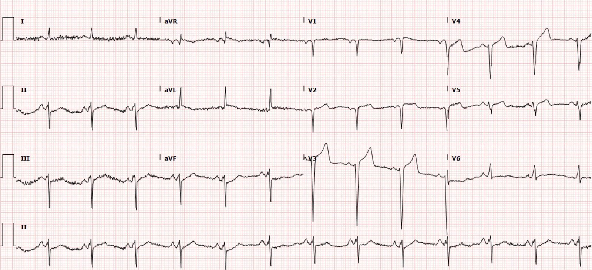
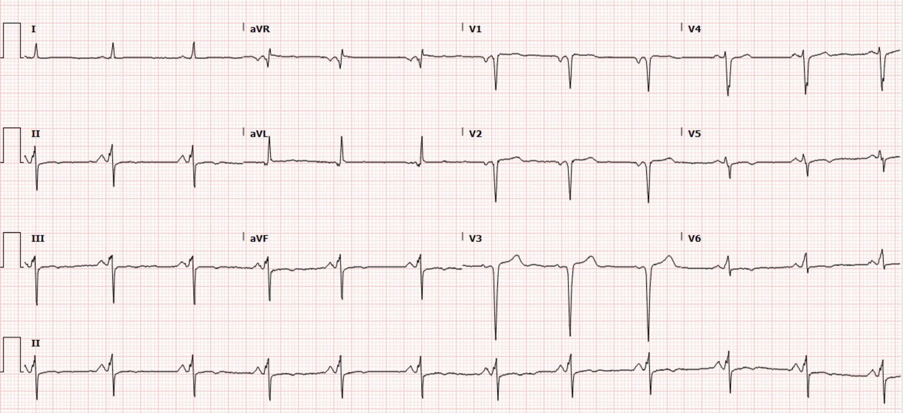
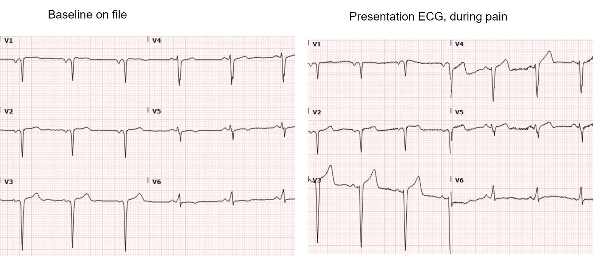
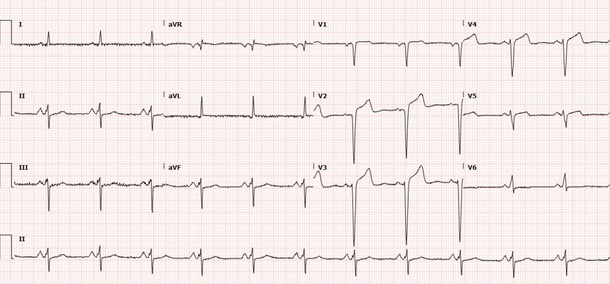
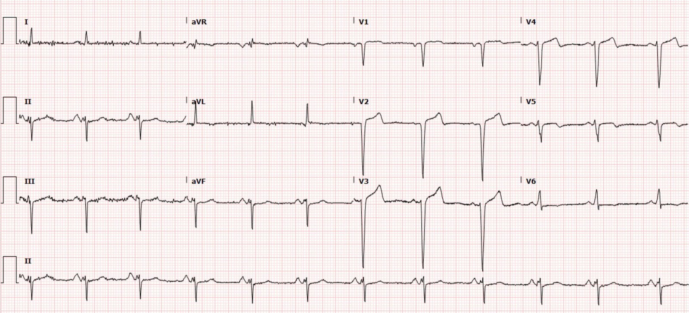
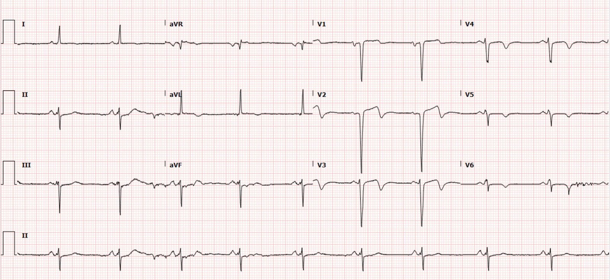
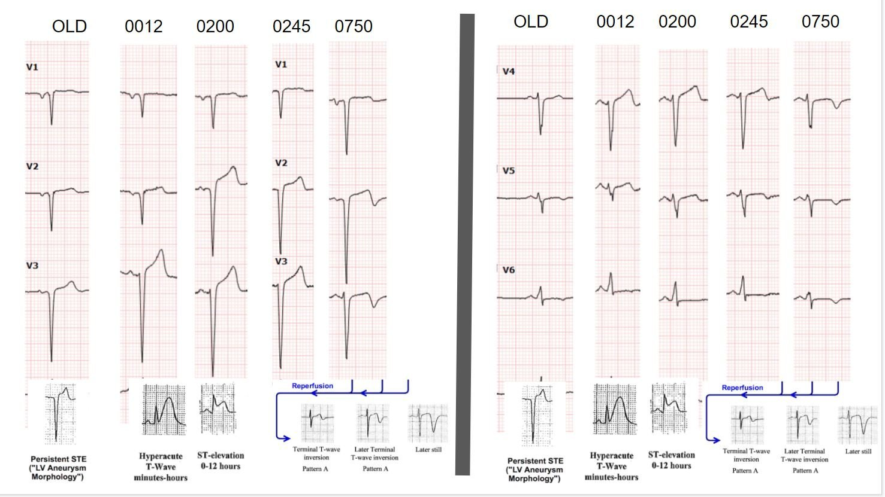
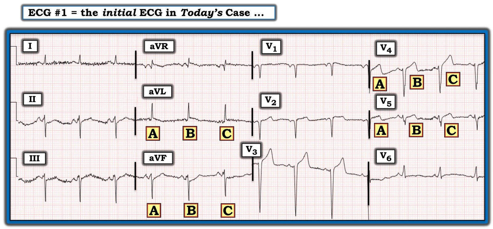

13/04/2022 — Một người đàn ông 50 mấy tuổi đau ngực cấp, có tiền sử nhồi máu cơ tim cũ
Bản dịch tiếng Việt của bài "A man in his 50s with acute chest pain and history of prior MI" – Dr. Smith’s ECG Blog. Giữ nguyên toàn bộ 9 hình ảnh của bản gốc.
Tác giả: Pendell Meyers
Một người đàn ông 50 mấy tuổi có tiền sử nhồi máu cơ tim (MI) thành trước đã đặt stent LAD, đến viện vì đau ngực cấp giống nhưng dữ dội hơn lần nhồi máu trước. Ông đến viện khoảng nửa đêm, với cơn đau bắt đầu từ khoảng 9 giờ tối hôm trước. Ông đã dùng nitroglycerin (NTG) tại nhà nhưng không đỡ, và được tiêm morphin ngay khi đến khoa cấp cứu (ED) vì đau ngực dữ dội (một ý tưởng rất tồi nếu độ chính xác của bạn trong việc phát hiện OMI trên điện tâm đồ còn thấp, vì cơn đau đang tiếp diễn sẽ là cơ hội cuối cùng để bạn nhận ra những bệnh nhân có OMI đang diễn ra mà chưa được điều trị).
Đây là điện tâm đồ lúc phân loại (triage) của ông, ghi lúc 0012:


Nhịp xoang. QRS hẹp nhưng tăng tiến sóng R kém và có sóng QS ở V1-V3, theo sau là ST chênh lên (STE) và sóng T dương có thể là lớn. Có một ít nhiễu do cử động ở phần chuyển đạo chi, nhưng có câu hỏi về STE kín đáo ở aVL, và ST chênh xuống (STD) soi gương kín đáo ở một số chuyển đạo dưới.
Chẩn đoán phân biệt có thể gồm:
#1) Nhồi máu thành trước cũ, không có thiếu máu cục bộ đang diễn ra (hình thái phình thất trái cũ)
#2) Nhồi máu thành trước cũ, chồng thêm tắc cấp
#3) Nhồi máu cơ tim bán cấp (trước đó không có nhồi máu ở vùng này, và nay đã ít nhất 6-12 giờ kể từ khi nhồi máu xuyên thành)
Sóng T cao và tối cấp (dùng các tỷ số dưới đây) ở cả #2 và, trong ít nhất vài giờ, ở #3, rồi giảm dần theo thời gian, theo mất mô và troponin tăng.
Troponin sẽ đã dương tính ở #3, sẽ nhanh chóng dương tính ở #2, và sẽ âm tính ở #1.
===============================================================
Chúng tôi đã xây dựng và thẩm định một quy tắc để phân biệt ST chênh lên do “phình thất trái” với STEMI. Quy tắc này dựa trên nguyên lý: STEMI cấp có sóng T cao, còn phình thất trái thì không. Có hai phiên bản:
Theo quy tắc thứ nhất, nếu có bất kỳ một tỷ số T/QRS nào ở V1-V4 lớn hơn 0.36 thì nhiều khả năng là STEMI: với điện tâm đồ ghi 3 năm trước, đó sẽ là chuyển đạo V2.
Tỷ số T/QRS để phân biệt STEMI thành trước với phình thất trái thành trước:
Thẩm định (Klein, Shroff, Smith): Electrocardiographic criteria to differentiate acute anterior ST-elevation myocardial infarction from left ventricular aneurysm (Tiêu chuẩn điện tâm đồ để phân biệt nhồi máu cơ tim ST chênh lên thành trước cấp với phình thất trái)
https://www.ajemjournal.com/article/S0735-6757(15)00190-4/fulltext (toàn văn bài thẩm định trên tạp chí AJEM)
Xây dựng (Smith): T/QRS ratio best distinguishes ventricular aneurysm from anterior myocardial infarction (Tỷ số T/QRS phân biệt tốt nhất phình thất với nhồi máu cơ tim thành trước)
https://www.ajemjournal.com/article/S0735-6757(05)00081-1/fulltext (toàn văn bài xây dựng quy tắc trên tạp chí AJEM)
Các nghiên cứu này cho thấy nhồi máu thành trước cấp (triệu chứng dưới 6 giờ) hầu như luôn có tỷ số T/QRS lớn hơn 0.36 ở ít nhất một trong các chuyển đạo V1-V4. Nhồi máu bán cấp (triệu chứng ít nhất 6 giờ) và nhồi máu cũ đều có tỷ số nhỏ hơn 0.36. Điều này chỉ đơn giản chứng minh rằng trong nhồi máu cấp, sóng T lớn.
===============================================================
Đây là các tỷ số T/QRS tôi tính được trên điện tâm đồ ở trên:
8/26.5 ở V3 = 0.30
4.5/14 ở V4 = 0.32
1.5/4 ở V5 (phức bộ QRS thứ nhất) = 0.375
2.5/4.5 ở V5 (phức bộ QRS thứ hai) = 0.55
Như vậy có nhiều chuyển đạo có tỷ số đáng lo ngại, và chuyển đạo V5 có lẽ đã đủ để chẩn đoán theo y văn nêu trên.
Nhưng quan trọng hơn cho việc học bằng hình ảnh, hãy đơn giản là so sánh với điện tâm đồ nền!
Điện tâm đồ nền từ vài tháng trước:


So sánh song song với điện tâm đồ nền:


Vậy mà nó lại được đọc là không thay đổi so với trước.
Troponin I độ nhạy cao (hs troponin I) ban đầu trả về tăng, 24 ng/L (giới hạn trên tham chiếu cho nam giới của xét nghiệm này là 20ng/L).
Vì đau ngực dữ dội như vậy mà không nhận ra “STEMI” trên điện tâm đồ, bệnh nhân được cho thêm morphin và đưa đi chụp CT mạch máu (CT angio) để loại trừ bóc tách động mạch chủ, kết quả âm tính.
Điện tâm đồ ghi lại lúc khoảng 2 giờ sáng:


Điện tâm đồ lại được đọc là không có thiếu máu cục bộ cấp.
Troponin lần hai trả về 1,751 ng/L.
Do troponin tăng, một điện tâm đồ khác được chỉ định lúc khoảng 3 giờ sáng:


Không có ghi nhận nào về việc lúc này bệnh nhân còn đau hay không, nhưng rõ ràng cơn đau đã liên tục suốt 3 giờ từ lúc đến viện đến lúc ghi điện tâm đồ này.
Khoa tim mạch được liên hệ để nhập viện, nhưng được biết đã từ chối, nói rằng không có dấu hiệu “STEMI”, và đề nghị nhập khoa nội. Không bên nào có vẻ nghĩ đến khả năng thông tim cấp cứu vì tắc mạch vành cấp, hay vì đau ngực đang tiếp diễn kèm troponin tăng, chẳng hạn chỉ định class 1A của ACC/AHA về thông tim cấp cứu trong vòng 2 giờ đối với hội chứng vành cấp (ACS) có thiếu máu cục bộ đang diễn ra dù đã điều trị nội khoa, bất kể dấu hiệu trên điện tâm đồ.
Vì vậy bệnh nhân được nhập khoa nội, với khoa tim mạch hội chẩn.
Troponin lần kế tiếp là 2,955 ng/L.
Lần kế tiếp nữa là 12,216 ng/L, và không xét nghiệm thêm lần nào nữa.
Một điện tâm đồ được ghi khoảng 8 giờ sau khi đến viện:


Diễn tiến:


Siêu âm tim chính thức được làm trước khi thông tim, cho thấy EF 20-25%, giảm động toàn bộ và rối loạn vận động thành (WMA) khu trú ở thành trước và mỏm.
Chụp mạch vành được thực hiện khoảng 12 giờ sau khi đến viện và cho thấy:
Về cơ bản tất cả các mạch đều có bệnh động mạch vành (CAD) với hẹp ít nhất 70% hoặc hơn. Trong số đó, có một chỗ hẹp 95% ở LAD đoạn giữa mà không ghi dòng chảy TIMI, và không có dấu hiệu nào cho thấy đã cố xác định đó có phải là tổn thương thủ phạm hay không (không ghi có huyết khối, hình ảnh mờ (haziness), v.v. hay không). Báo cáo thông tim ghi không tìm thấy thủ phạm cấp. Không can thiệp gì.
Tình trạng tăng troponin của ông được quy cho nhồi máu cơ tim không ST chênh lên (NSTEMI), và hồ sơ ghi rằng chưa chắc đây là nhồi máu cơ tim típ 1 hay nhồi máu cơ tim típ 2 do “suy tim tâm thu kèm quá tải thể tích cấp.”
Sau đó vài ngày, MRI tim được thực hiện, cho thấy:
“EF 27% với vô động các đoạn thành trước giữa, trước vách và toàn bộ các đoạn mỏm thất trái, cho thấy ổ nhồi máu xuyên thành lớn dọc theo các đoạn thành trước giữa/trước vách và toàn bộ các đoạn mỏm thất trái (vùng chi phối của LAD), không còn sống ngoại trừ vùng phân bố của nhánh chéo thứ nhất là còn sống hoàn toàn; các vùng chi phối của RCA/động mạch mũ/nhánh bờ tù (OM) còn sống hoàn toàn.”
Điều trị nội khoa được lựa chọn. Ông sống sót qua đợt nhập viện này và được xuất viện.
Những điểm cần học:
Khi bệnh nhân đã có sẵn hình thái phình thất trái (LVA) ở một vùng cơ tim nhất định, OMI tái phát ở vùng đó khó nhận ra hơn, nhưng vẫn có thể nhận ra nhờ hiểu về sóng T tối cấp và dùng các công thức ở trên. Như mọi khi, phần mô còn sống nhiều nhất và có nguy cơ nhất trong OMI biểu hiện ở sóng T dưới dạng sóng T tối cấp. Điều này vẫn đúng ngay cả trong bối cảnh LVA.
Đau do thiếu máu cục bộ đang tiếp diễn, troponin tăng dần, dù đã điều trị nội khoa tối đa, là chỉ định class 1A cho thông tim cấp cứu theo hướng dẫn ACC/AHA hiện hành. Bệnh nhân này là một trong khoảng hơn 90% số bệnh nhân được xử trí trái với các hướng dẫn này.
Học về diễn tiến của OMI giúp giải phóng tâm trí bạn khỏi nhà tù của tiêu chuẩn STEMI và cho phép bạn bắt đầu hiểu về OMI.
Hãy nhớ rằng, OMI STEMI âm tính (STEMI(-) OMI) được xử trí chậm trễ có tử vong và bệnh tật lâu dài cao gấp đôi so với những bệnh nhân tương ứng trong RCT không có OMI.
Luyện tập thêm về LVA và OMI tại đây:
A woman in her 40s with acute chest pain (Một phụ nữ 40 mấy tuổi đau ngực cấp)
Subtle Anterior STEMI Superimposed on Anterior LV Aneurysm Morphology (STEMI thành trước kín đáo chồng lên hình thái phình thất trái thành trước)
ST Elevation: is it due to old MI (LV aneurysm) or to acute STEMI? (ST chênh lên: do nhồi máu cũ (phình thất trái) hay do STEMI cấp?)
ST Elevation and QS-waves in a patient with Dyspnea (ST chênh lên và sóng QS ở một bệnh nhân khó thở)
Tachycardia and ST Elevation. (Nhịp nhanh và ST chênh lên.)
This ECG is nearly pathognomonic. What is it? (Điện tâm đồ này gần như đặc hiệu chẩn đoán. Đó là gì?)
Subtle Anterior STEMI Superimposed on Anterior LV Aneurysm Morphology (STEMI thành trước kín đáo chồng lên hình thái phình thất trái thành trước)
Is this acute STEMI? LV Aneurysm? Would you give Thrombolytics? (Đây là STEMI cấp? Phình thất trái? Bạn có cho thuốc tiêu sợi huyết không?)
ST elevation and QS-waves. ECG is equivocal. Use ED Echo!! (ST chênh lên và sóng QS. Điện tâm đồ mơ hồ. Hãy dùng siêu âm tim tại khoa cấp cứu!!)

===================================
BÌNH LUẬN CỦA TÔI, bởi KEN GRAUER, MD (13/4/2022):
===================================
Như tôi vẫn thường thừa nhận — “Nhìn lại thì cái gì cũng rõ 100% qua kính nhìn hồi cứu (retrospectoscope)”. Thật DỄ để tôi ngồi đó mà “bới móc” chi tiết của những ca bệnh mà tôi không có mặt ở “tuyến đầu”. Đó không phải mục đích của chúng ta. Thay vào đó — mục đích của chúng ta là nhìn lại những gì đã xảy ra một cách nghiêm khắc, tự vấn và khách quan — với mục tiêu duy nhất là học hỏi từ những ca bệnh này với hy vọng cải thiện việc chăm sóc ở lần sau. Tất cả chúng ta đều đang học mỗi ngày từ những ca bệnh này.
Tôi tập trung bình luận vào một vài khía cạnh của ca này khác với những gì đã được đề cập trong phần bàn luận kỹ lưỡng và xuất sắc của Dr. Meyers.
NHỮNG CẠM BẪY trong ca hôm nay:
Thay vì lo ngại về việc dùng morphin cho cơn đau ngực dữ dội đang tiếp diễn khi đến khoa cấp cứu — tôi lo ngại hơn nhiều về những đặc điểm của ca này mà dường như đã bị bỏ qua.
- Người đàn ông 50 mấy tuổi này có CAD đã được ghi nhận (tức là, nhồi máu thành trước cũ đã đặt stent LAD). Ông đến khoa cấp cứu lúc nửa đêm với đau ngực mới khởi phát 3 giờ và cơn đau dữ dội hơn cơn đau ngực trong lần nhồi máu trước. NTG không làm đỡ đau.
BÌNH LUẬN: Bệnh sử này gợi ý một tình huống “khả năng cao (high-prevalence likelihood)” có biến cố cấp ở mức rõ ràng nhất mà người ta có thể hình dung. Đặc biệt khi có đau ngực dữ dội đang tiếp diễn (suốt 3 giờ) — “trách nhiệm chứng minh” phải thuộc về việc chỉ ra vì sao không cần thông tim sớm, chứ không phải ngược lại.
- Ngay cả khi chưa xem điện tâm đồ ban đầu — tình huống lâm sàng này (đặc biệt khi troponin tăng ở bất kỳ mức nào) — nên được xem là chỉ định rõ ràng cho thông tim sớm.
Dr. Meyers đã xem xét chi tiết các điện tâm đồ liên tiếp trong ca hôm nay. Tôi muốn nhìn điện tâm đồ ban đầu từ một góc độ khác — vì vậy tôi đã đưa lại và đánh dấu bản ghi này trong Hình 1:


SUY NGHĨ CỦA TÔI về Hình 1:
Khi đọc các điện tâm đồ liên tiếp — tôi thấy hữu ích khi bắt đầu bằng việc đánh giá có hệ thống toàn bộ bản ghi trước khi đối chiếu các dấu hiệu với tình huống lâm sàng. Trái với quan niệm phổ biến — cách tiếp cận này không hề làm tôi chậm lại.
- Có nhiễu đường nền đáng kể ở nhiều chuyển đạo trên bản ghi này. Vì không có mặt tại chỗ — tôi không biết tại sao lại có nhiều nhiễu như vậy — nhưng ở bệnh nhân có khả năng cao cần thông tim sớm như thế này — tôi sẽ ngay lập tức ghi lại điện tâm đồ này (hoặc ghi lại trong vòng không quá 10-15 phút) với hy vọng có được một bản ghi dễ diễn giải hơn.
- Dù vậy — có nhịp xoang đều với tần số ~80 lần/phút trên điện tâm đồ #1. Tất cả các khoảng (PR, QRS, QTc) đều bình thường.
- Có trục lệch trái rõ rệt (tức là ít nhất -60 độ) — phù hợp với LAHB (blốc phân nhánh trái trước — Left Anterior HemiBlock).
- Tiêu chuẩn điện thế của LVH được thỏa mãn trên điện tâm đồ #1, chủ yếu do sóng S rất sâu (~25 mm) ở chuyển đạo V3 (thỏa mãn cả tiêu chuẩn Cornell lẫn tiêu chuẩn Peguero — như đã bàn trong Bình luận của tôi ở bài đăng ngày 20 tháng Sáu năm 2020 trên Blog của Dr. Smith).
LƯU Ý: Trước khi đi tiếp — tôi nghĩ cũng đáng để bình luận về những hệ quả có thể có của các dấu hiệu nêu trên.
- Vì về mặt giải phẫu, phân nhánh trái trước nằm ở phía trước (tức là “anterior”) so với phân nhánh trái sau — nên khi có LAHB, quá trình hoạt hóa thất ban đầu hướng ra phía sau (về phía phân nhánh trái sau còn nguyên vẹn). Do đó — LAHB có thể gây ra (hoặc làm nặng thêm) tình trạng tăng tiến sóng R kém.
- Như chúng tôi đã minh họa trong nhiều bài ECG Blog trên Blog của Dr. Smith — sự hiện diện của LVH có thể làm phức tạp việc đánh giá ST chênh lên ở thành trước — bởi vì hình ảnh “soi gương” của “tăng gánh” thất trái ở các chuyển đạo bên, ở những bệnh nhân có LVH biểu hiện bằng sóng S sâu ở các chuyển đạo trước, chính là ST chênh lên ở các chuyển đạo trước này (Xem Bình luận của tôi trong bài đăng ngày 27 tháng Mười Hai năm 2018 — trong bài đăng ngày 6 tháng Hai năm 2020 — và trong bài đăng ngày 20 tháng Sáu năm 2020, đó là chỉ kể vài ví dụ).
- Ca hôm nay còn phức tạp hơn nữa — vì tiền sử đã biết có nhồi máu cơ tim thành trước cũ tự nó có thể làm sóng S ở các chuyển đạo trước sâu hơn mà không phải do LVH (tức là việc mất các lực hướng ra trước do ổ nhồi máu thành trước có thể khiến các lực hướng ra sau không còn bị đối trọng).
- Dù vậy — điện tâm đồ #1 không có sóng R cao vốn rất thường gặp khi có LVH ở các chuyển đạo bên trái (tức là ở các chuyển đạo I, aVL và V6) — và cũng không có sóng S sâu ở các chuyển đạo trước V1,V2 — nên mặc dù thỏa mãn “tiêu chuẩn điện thế” của LVH theo sách giáo khoa — tôi không tin chắc rằng chúng ta có thể chẩn đoán LVH dựa trên bản ghi này (tức là cần siêu âm tim chính thức mới chẩn đoán được).
- ĐIỀU CỐT LÕI: Dù không thể đưa ra kết luận chắc chắn — điều quan trọng là phải nhận thức được sự tương tác có thể có giữa LAHB, LVH và nhồi máu thành trước cũ khi cố gắng đánh giá điện tâm đồ ban đầu trong ca hôm nay!
Hoàn tất đánh giá hệ thống của tôi đối với điện tâm đồ #1:
Về các thay đổi Q–R–S–T trên điện tâm đồ #1:
- Sóng Q: Có phức bộ QS ở các chuyển đạo V1 và V2. Ở chuyển đạo V3 có một sóng lệch dương ban đầu (sóng r) nhỏ nhưng hiện diện. Sóng r ban đầu này lớn dần lên một chút ở các chuyển đạo V3 và V4 — cho tới khi vùng chuyển tiếp sang sóng R chiếm ưu thế cuối cùng mới xuất hiện ở chuyển đạo V6.
- Có PRWP (tăng tiến sóng R kém — Poor R Wave Progression) — xét việc sóng r ban đầu nhỏ như thế nào cho tới tận chuyển đạo V6. Điều này phù hợp với nhồi máu thành trước cũ của bệnh nhân.
Chính việc đánh giá các thay đổi ST-T trên điện tâm đồ #1 mới là điều rất khó:
- Như tôi đã nhấn mạnh ở trên — nhiễu đường nền đáng kể làm phức tạp việc đánh giá. Hai chuyển đạo đáng lo ngại nhất đối với tôi trên điện tâm đồ #1 là chuyển đạo aVL và aVF. Nhưng trong 3 nhát bóp ở 2 chuyển đạo được ghi đồng thời này, NHÁT NÀO mới là nhát “thật”? Ở bệnh nhân có đau ngực mới khởi phát và kéo dài này — rõ ràng có ST chênh lên đáng lo ngại ở phức bộ “B” của chuyển đạo aVL (kèm ST chênh xuống soi gương tương ứng ở chuyển đạo aVF). Phức bộ “A” ở aVL vẫn có ST chênh lên, dù ở mức độ ít hơn. Nhưng tôi không nghĩ chúng ta có thể nói có ST chênh lên chắc chắn nào ở đoạn ST đầy nhiễu của phức bộ “C” trong chuyển đạo aVL này.
- Những cạm bẫy tương tự khi diễn giải các thay đổi ST-T cũng gặp ở các chuyển đạo V4 và V5 được ghi đồng thời. Nếu phức bộ “C” ở V4 và V5 thể hiện đoạn ST “thật” — thì không còn nghi ngờ gì đây là sóng T tối cấp. Nhưng dù ST-T của “A” và “B” ở V4, V5 vẫn bất thường — mức bất thường này không hề mang tính quyết định bằng.
- Chuyển đạo V3 ít ra cũng cho thấy sự nhất quán — ở chỗ hình thái ST-T của cả 3 phức bộ ghi được ở chuyển đạo này trông giống nhau. Tôi xin nhấn mạnh rằng tôi hoàn toàn đồng ý với nhận định của Dr. Meyers — cụ thể là, dù có sóng S sâu ở chuyển đạo V3, mức ST chênh lên tại điểm J và chiều cao của đỉnh sóng T là rất đáng nghi ngờ. Nhưng xét các yếu tố có thể gây nhiễu mà tôi đã mô tả ở trên — vào thời điểm này, tôi chưa chắc chắn 100% rằng điện tâm đồ #1 phản ánh một quá trình cấp tính.
ĐIỀU CỐT LÕI về ca hôm nay: Gần 2 giờ đã trôi qua sau khi ghi điện tâm đồ ban đầu — cho tới khi điện tâm đồ ghi lại cuối cùng mới được thực hiện lúc 2:00 sáng.
- Xét những lỗi kỹ thuật về chất lượng của điện tâm đồ #1 — cộng thêm đau ngực dữ dội kéo dài — cộng thêm troponin ban đầu tăng nhẹ — khoảng trễ giữa hai bản ghi này là quá dài.
- Ngay sau đó đã tìm thấy một bản ghi cũ của bệnh nhân này. Dù bản ghi cũ này dường như đã được nhóm chăm sóc xem qua — việc so sánh từng chuyển đạo một chắc chắn đã không được thực hiện — nếu không thì không thể nào không nhận ra sự khác biệt giữa bản ghi cũ và điện tâm đồ ban đầu (điện tâm đồ #1) trong ca hôm nay (Xem hình so sánh song song của Dr. Meyers ở trên). Cách chính xác nhất (và tiết kiệm thời gian nhất) để so sánh các bản ghi liên tiếp là sau khi đã diễn giải một trong các điện tâm đồ — hãy so sánh 2 bản ghi trước mặt bạn từng–chuyển–đạo một (Tôi minh họa cách tiếp cận này trong Bình luận của tôi ở bài đăng ngày 8 tháng Tám năm 2020 — và ở bài đăng ngày 21 tháng Tám năm 2020 trên Blog của Dr. Smith).
- Suy nghĩ kết thúc: Như Dr. Meyers đã trình bày chi tiết ở trên — những sơ suất trong ca hôm nay tiếp diễn suốt ~12 giờ sau khi bệnh nhân đến khoa cấp cứu, cho tới khi cuối cùng mới được thông tim. Tôi luôn tin rằng cách tốt nhất để học từ những sai lầm đã mắc phải — là lần lại các sự kiện và tự vấn sâu sắc về những quyết định đã đưa ra. Quyết định thông tim lẽ ra phải được đưa ra từ rất lâu trước khi ghi điện tâm đồ thứ 2 ( = bản ghi lúc 2:00 sáng).